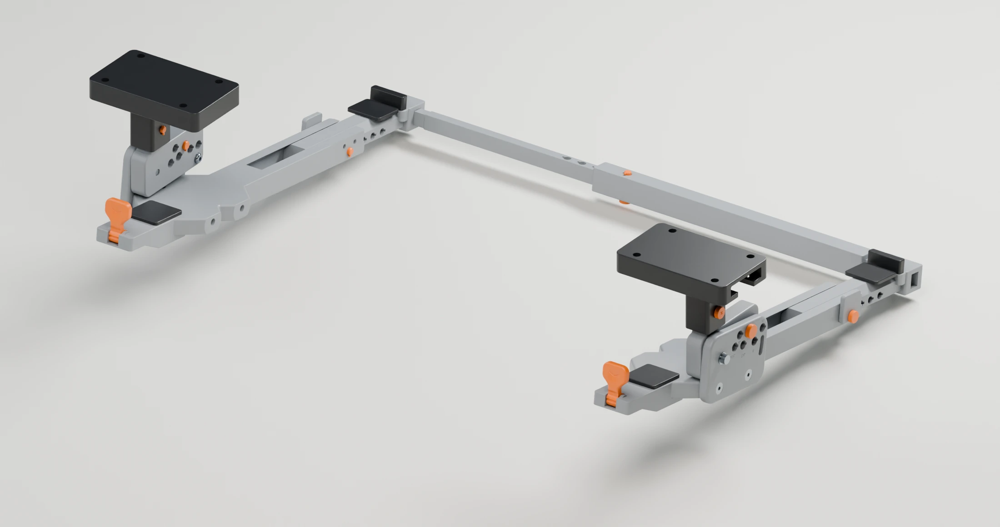
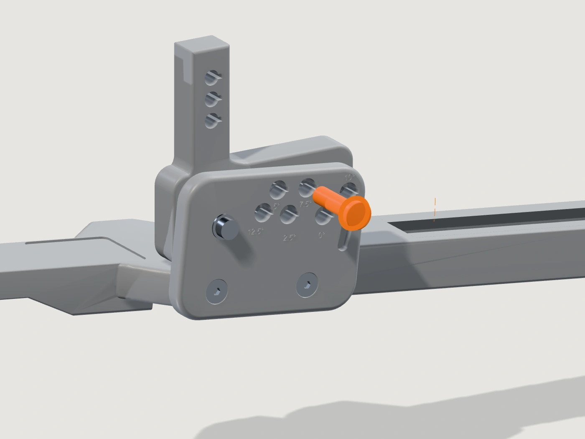
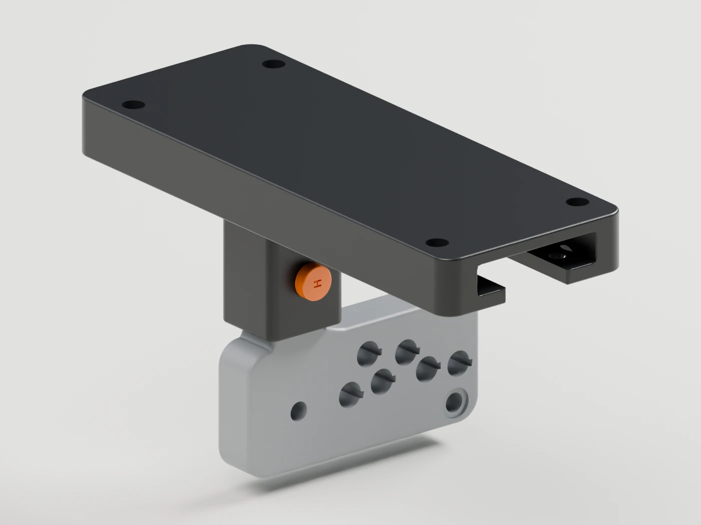
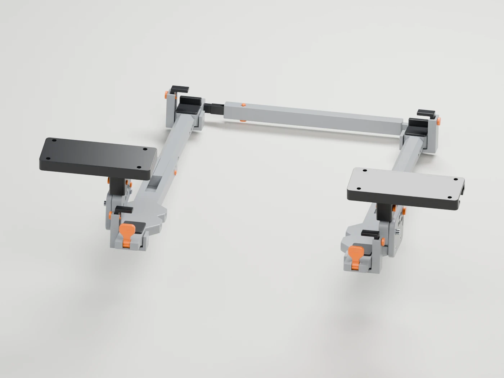
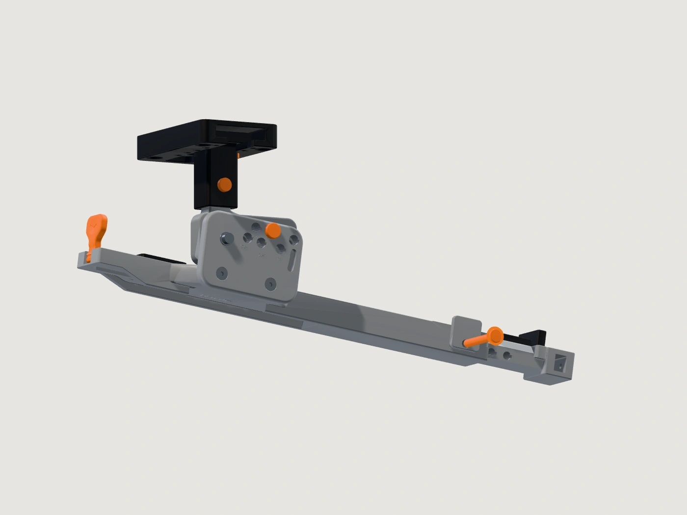

One base.
Either side.
The same 73 × 44 mm base mounts on the left or right. Mirrored pin positions let the width carriage work in either orientation.
Inspect the assembly ↗A dedicated place for your laptop.
More room for everything else.

See exactly what moves, what stays fixed and how each pin returns to lock the setting. Always remove the laptop before adjusting.

Six indexed positions from 0° to 12.5°. Rotate and withdraw the angle pin, pivot the rail, then insert the pin at the next position. The M3 pivot stays in place.
Always adjust with the laptop removed.

Three height levels in 6 mm steps. The hanger slides through the carriage while the desk base stays fixed. Reinsert the H pin and turn it to retain the new setting.
Always adjust with the laptop removed.

Each carriage moves independently across its universal base. Withdraw both W pins and the optional rear-link pin before changing the width, then lock the aligned holes.
Always adjust with the laptop removed.

A rear extension follows a 45° guide, with seven indexed positions at 9 mm intervals. The D pin passes through the rail and extension to retain the selected depth.
Always adjust with the laptop removed.
The same 73 × 44 mm base mounts on the left or right. Mirrored pin positions let the width carriage work in either orientation.
Inspect the assembly ↗A telescopic rear bridge joins the rails and follows their width. Use matching angle, height and depth on both sides. It connects the supports; it does not add a desk fixing point.
Try the rear link below ↓Choose the structure, mounts and accent colors.
Explore your combination in real time.
A paid personal-use package: print files, editable CAD and illustrated assembly manuals. Personal-use pricing will be announced at launch.
Request paid access ↗Selling physical DETENT products requires a separate commercial licence. Access to design files is not permission to sell prints.
Commercial licensing ↗Standard and A1 mini rail options, optional rear bridge, part identification, hardware list, assembly sequence and adjustment instructions. No free project downloads.
Development prototype. D23 has geometric checks but no validated load rating. Physical load, fatigue and click testing remain outstanding. Paid access does not imply certification.
Project files and manuals require paid access. Selling physical prints also requires a commercial licence. Terms are confirmed before purchase.
Read the license terms ↗For one maker or business selling physical DETENT prints. Digital file resale is not included.
Requests open on GitHub and are public. Do not include payment or personal details. Payment instructions follow separately; a request does not activate a license.